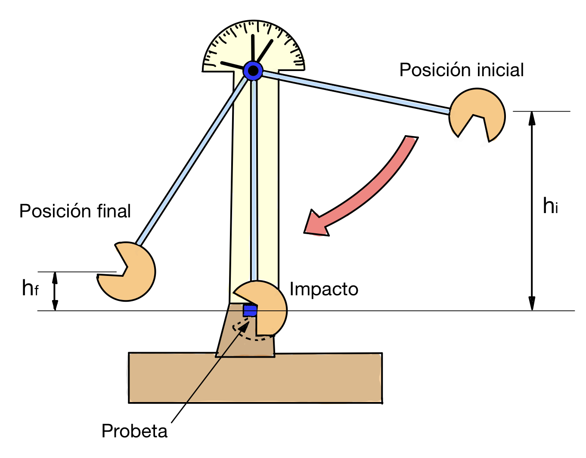
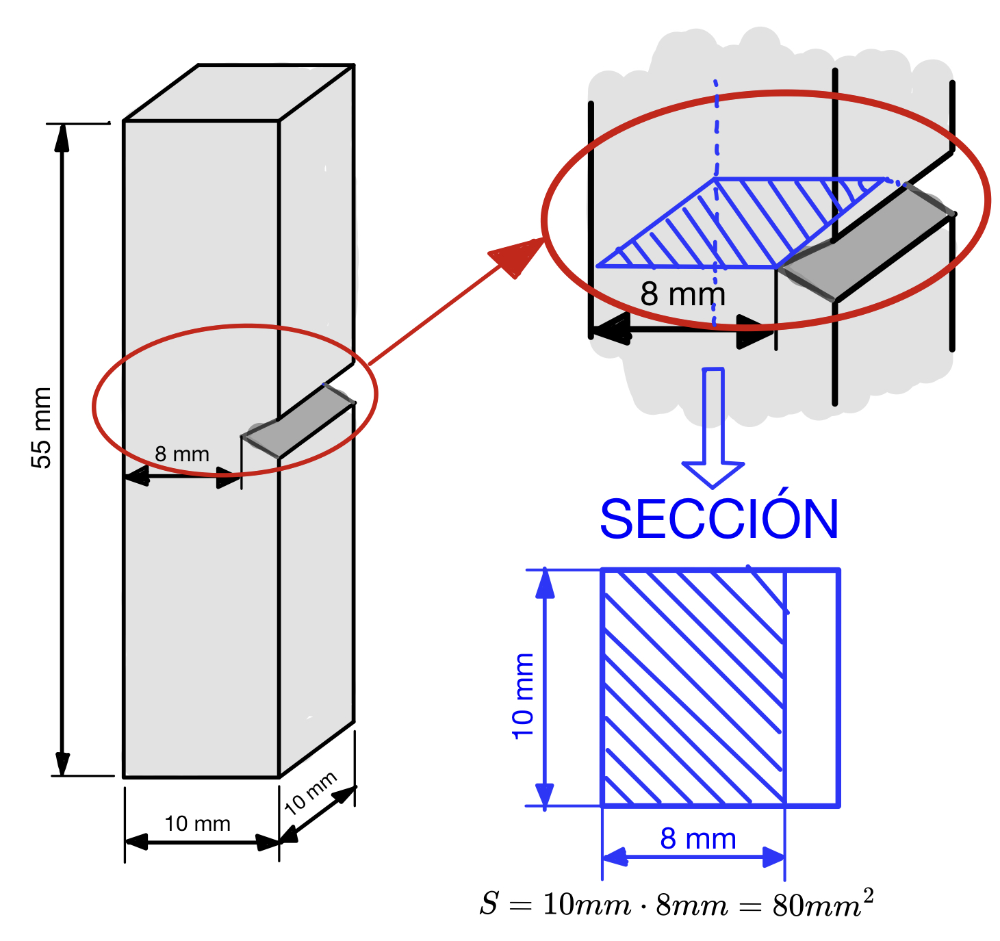

Medida de la tenacidad
EL ensayo de resiliencia se utiliza para medir la tenacidad de un material. Esto es, su resistencia ante los impactos.
Se denomina ensayo de resiliencia porque se mide una magnitud, denominada resiliencia, que es la energía absorbida por un material al romperse, dividida entre la sección de rotura. Es necesario dividir la energía entre la sección para que el valor no dependa del tamaño de la pieza, sino sólo del material del que está hecha.
Además de cuantificar la resiliencia (y permitirnos saber la tenacidad del material), este ensayo permite estudiar la rotura para ver si se produce con deformación plástica o de manera frágil.
Para llevar a cabo este ensayo se utiliza un dispositivo denominado péndulo de Charpy.
El péndulo de Charpy
El péndulo de Charpy es un dispositivo que nos va a permitir medir, de una manera directa, la energía absorbida por una probeta del material de estudio al romperse. Al utilizarse una s probetas con una forma especial, podemos saber cuál será exactamente la sección de rotura, por lo que podremos calcular fácilmente el valor de la resiliencia.

Consiste, como su nombre indica, en un péndulo con una masa pesada en el extremo (martillo), que se deja caer desde una altura inicial (hi) para que golpee a la probeta y la rompa. En el punto desde el que se suelta el péndulo, la energía del martillo es únicamente energía potencial (lo soltamos desde una posición de reposo), que podemos conocer sabiendo la masa del martillo y la altura (\(E_{i}=m\cdot g\cdot h_{i}\)). Tras romper la probeta, el péndulo sigue moviéndose hasta que se detiene de nuevo a una altura final (hf). En ese punto vuelve a tener únicamente energía potencial, que podemos calcular análogamente (\(E_{f}=m\cdot g\cdot h_{f}\))
La energía empleada en romper la probeta será la diferencia entre la energía inicial y la energía final (salvo una pequeña parte de energía que se disipará por el rozamiento del péndulo, pero que puede ser fácilmente compensada en los cálculos).
| \[E_{absorbida}=E_{i}-E_{f}=m\cdot g\cdot (h_{i}-h_{f})\] |
Como ya dijimos, la energía absorbida no depende sólo del material sino del tamaño de la probeta. Para eliminar esa dependencia del tamaño, dividimos esa energía entre la sección de rotura. La magnitud resultante se denomina resiliencia, se denota por la letra griega ρ y tiene la siguiente expresión:
| \[\rho =\frac{E_{i}-E_{f}}{S}=\frac{m\cdot g\cdot (h_{i}-h_{f})}{S}\] |
Aunque es posible expresarla en unidades del SI (J/m2), la resiliencia suele expresarse en J/mm2 o en J/cm2, por lo que las unidades a utilizar serán: m en kg, g en m/s2, h en m y S en mm2 o en cm2.
Lectura de los valores del ensayo
Leer la altura inicial y la altura final del péndulo podría ser complicado si intentamos medirlas directamente. Sin embargo, es muy sencillo leer el ángulo girado por el péndulo en un dial colocado en la parte superior. Sabiendo el ángulo en el que está colocado el péndulo y conociendo su longitud, es fácil deducir la altura a la que se encuentra su extremo mediante trigonometría básica.
{kind=link}
Podemos entonces obtener un fórmula para calcular la resiliencia sabiendo los ángulos inicial y final del péndulo en vez de sus alturas:
| \[\rho =\frac{m\cdot g\cdot (h_{i}-h_{f})}{S}=\frac{m\cdot g\cdot L\cdot (\cos heta _{f}-\cos heta _{i})}{S}\] |
Por supuesto, la longitud del péndulo (L) se pone en metros, para que la resiliencia siga expresándose en J/mm2.
Normalmente, los diales de los péndulos Charpy ya tienen este cálculo hecho para la diferencia de energía potencial (no para la resiliencia, porque podrían emplearse probetas con diferentes secciones de rotura). Por lo tanto, se puede leer directamente la energía absorbida en el dial del péndulo, sin necesidad de realizar cálculos.
El valor de la sección de rotura se conoce antes incluso de realizar el ensayo, pues las probetas tienen una entalla para que se rompan siempre por el mismo sitio. De esta manera, dada una probeta, ya tenemos el valor de S conocido de antemano. Las probetas más usuales en los ensayos Charpy tienen forma de prisma de sección cuadrada con una entalla en forma de V. La sección mide 10x10 mm y la entalla tiene una profundidad de 2 mm, por lo que la sección de rotura es de 10x8 mm, es decir, 80 mm2. La longitud de las probetas suele ser de 55 mm.

Aunque esa es la probeta Charpy más utilizada, también existen otras probetas con dimensiones ligeramente diferentes e incluso con entallas en forma de U en vez de V, por ejemplo. Sea como sea la probeta, la sección se calcula de la misma forma que se ha mostrado en este ejemplo.
Aquí os dejo un vídeo donde se puede ver cómo se realiza un ensayo Charpy real. Como en los anteriores, podéis activar los subtítulos y la traducción automática si los queréis ver en castellano:
Ejercicios de ensayos de resiliencia
Aquí tenéis una colección de ejercicios de ensayos Charpy extraídos de exámenes de PAU. Como en las otras colecciones, los tenéis por orden cronológico para que veáis cuáles han sido las tendencias.